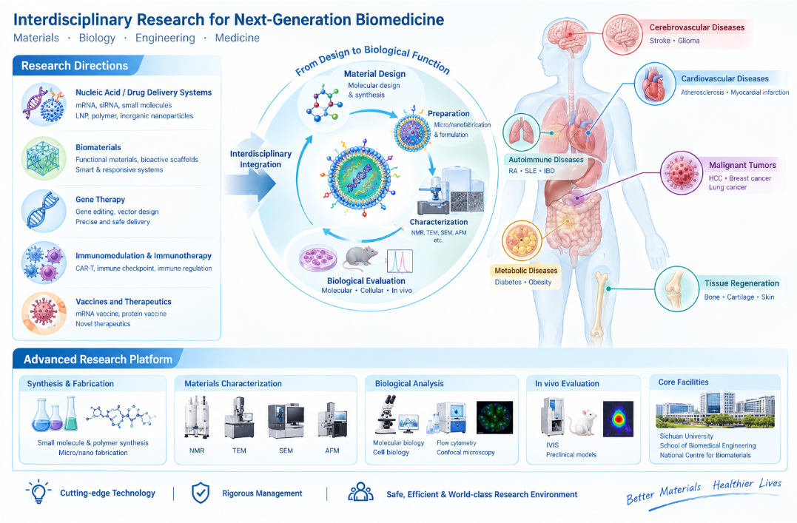

本课题组聚焦生物医学前沿，致力于新型核酸/药物递送系统、生物医用材料、基因治疗、免疫调控与免疫治疗等关键方向，以及相关疫苗和药物的研发。团队依托化学、材料科学、微纳米技术、生物学、生物医学工程与临床医学的深度交叉融合，深入探索其心脑血管疾病、自身免疫性疾病、恶性肿瘤、代谢性疾病及组织再生等领域的应用潜力与作用机制。实验室是集小分子与高分子合成、微/纳米加工及材料表征、分子与细胞生物学及体内外生物评价于一体的综合性科研平台。依托四川大学、生物医学工程学院及国家生物材料中心的一流硬件（高端 NMR、TEM、SEM、AFM、IVIS 等）支撑，课题组实现了从“材料设计—制备—表征”到“生物功能评价”的无缝衔接，全方位赋能前沿交叉研究。实验室实行规范化管理，定期组织安全培训，致力于为科研人员提供安全、高效、国际一流的科研环境。
